Home / Age of Contact and Craft / The Americas: Andes and South America
Playable heritage gameBandoneon and tango rhythm
Also known as Bandoneon
The bandoneon is a square concertina with button keys, played by pulling and pushing the bellows. Each button gives one note when the bellows open and a different note when they close, and in the tango of Argentina and Uruguay it carries long, sighing phrases over a steady walking beat.
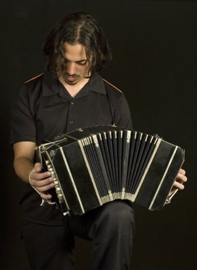
How to play
- Four notes sound as the bellows open and four as they close; the low walking beat sits on the right.
- Notes travel toward a line at the bottom; strike the key just as its note arrives.
- Begin with the walking beat, then play the milonga pattern of three, three and two.
- Finish with the phrase that alternates the open and close notes.
Rules at a glance
- Each key gives one pitch on the pull and another on the push, so two rows of notes alternate in a phrase.
- A stroke within a hair of the note is perfect, a near one is good, and a missed one scores nothing.
- An extra stroke while a song is running costs a few points.
- Each song plays twice; three stars need roughly nine notes in ten on time.
- The milonga groups eight pulses as three, three and two.
About the tradition
The bandoneon came to the Rio de la Plata with immigrants in the later nineteenth century and became the voice of the tango. Players still gather in the cafes and dance halls of Buenos Aires and Montevideo, where the instrument is passed from teacher to student.
Origins
Usually placed in the era of Age of Contact and Craft (about 1500 to 1800), although its exact origins are uncertain, within the cultural world of The Americas: Andes and South America.
Credits
- Tradition: tango and milonga bandoneon playing; figures written for this game
- Photo of a bandoneon player in Buenos Aires from Wikimedia Commons (CC BY-SA 3.0)
- Photo: Jorge Royan, CC BY-SA 3.0, source on Wikimedia Commons
- Text: CC BY-SA 4.0, World Heritage Games.
Sources

Get the app
Bandoneon and tango rhythm is one of 10 drums and rhythms in the Drum Music of the World app for iPhone, iPad and Android. Live on Google Play. Submitted to the App Store; in review, and the store link appears here the day it goes live. One app, many traditions, no account needed.
More games to play
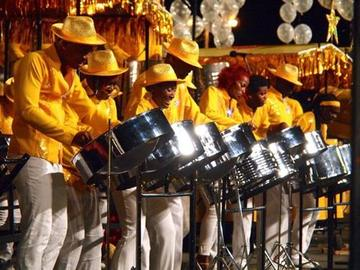
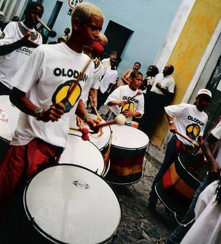
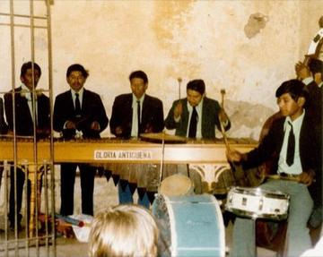
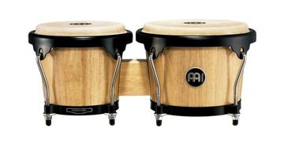
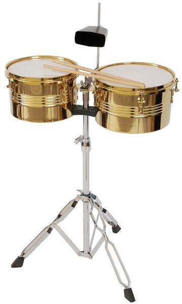
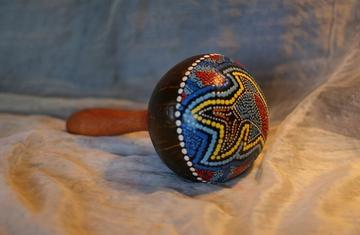
More from Argentina


Generala
Argentina +2 · Board and table games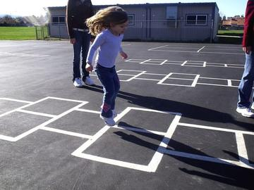
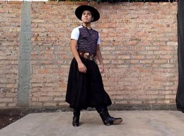
Malambo
Argentina · Dances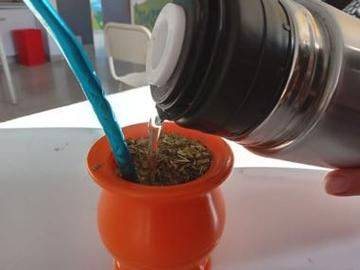
Mate Pouring
Argentina · Crafts and making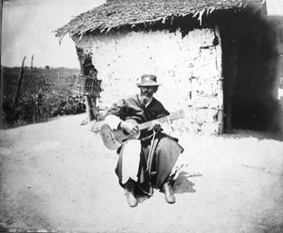
Payada
Argentina +1 · Wrestling and martial sports